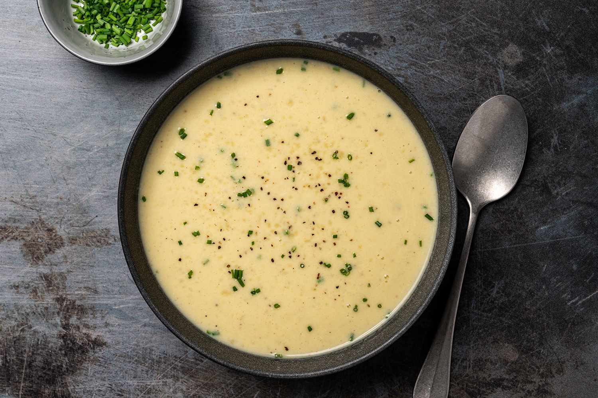

Potato and Leek Soup

This soup receipe is great for cold and dreary days
Ingredients
- Garlic
- Butter
- Bullion
- Heavy Cream
- Leek
- Potato
Instructions
- Place a large pot on the stove on medium heat.
- Melt the butter in the pot, brown garlic.
- Chop leeks and place them in the pot.
- Cut up potatoes into cubes.
- Place potatoes in the pot.
- Pour in cream, boil for 20 minutes.
Home